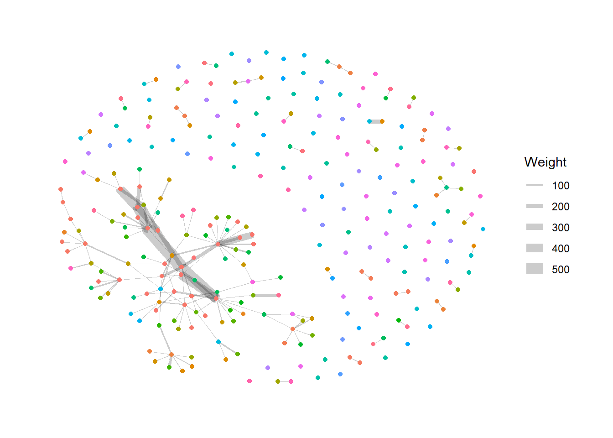
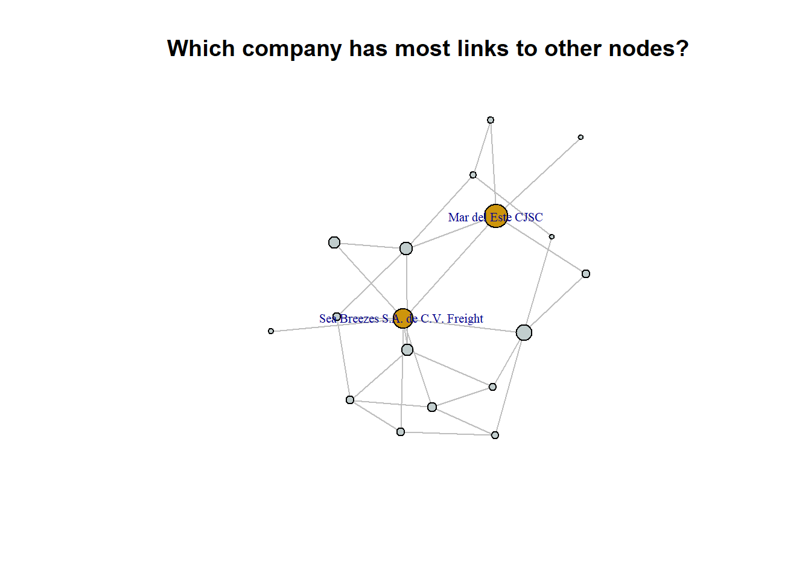
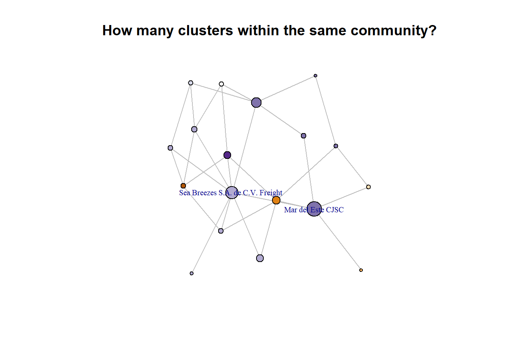
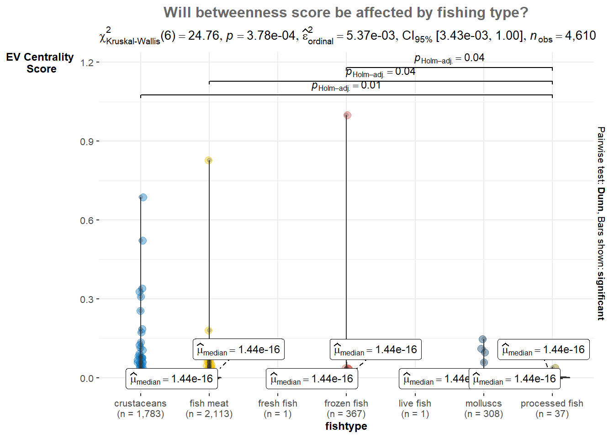

Show the code
pacman::p_load(jsonlite, tidygraph, ggraph, visNetwork, tidyverse, lubridate, igraph, ggiraph, ggplot2, ggthemes, patchwork, plotly, ggstatsplot, hrbrthemes)With reference to Mini-Challenge 2 of VAST Challenge 2023 and by using appropriate static and interactive statistical graphics methods, I will be revealing the:
To analyse the temporal patterns, timeline visualization and network visualization will be using to identify the patterns and explore the possible the business relationship between entities.
Visualizing Temporal Patterns:
Timeline Visualization: Create a timeline visualization that shows the activities of companies over time. Each company can be represented as a separate entity on the timeline, and their fishing activities (both legal and illegal) can be displayed as events or bars. This allows analysts to compare the temporal patterns of different companies and identify any suspicious behavior or recurring patterns.
Temporal Network Visualization: Represent the relationships between companies and their fishing activities as a network, where nodes represent companies and edges indicate their fishing activities. By incorporating temporal information into the visualization, such as color-coding or varying the thickness of edges based on the time of occurrence or numbers of interactions between nodes, analysts can identify patterns of illegal fishing and observe if companies reappear under different names.
The following code chunks will install and load the required packages.
pacman::p_load(jsonlite, tidygraph, ggraph, visNetwork, tidyverse, lubridate, igraph, ggiraph, ggplot2, ggthemes, patchwork, plotly, ggstatsplot, hrbrthemes)In the code chunk below, fromJSON() of jsonlite package is used to import mc2_challenge_graph.json into R environment.
MC2 <- fromJSON("data/mc2_challenge_graph.json")The code chunk is used to extract nodes/edges data tables from MC2 list object and save the output in a tibble data frame object called MC2_nodes and MC2_edges.
MC2_nodes <- as_tibble(MC2$nodes) %>%
select(id, shpcountry, rcvcountry)
MC2_edges <- as_tibble(MC2$links) %>%
mutate(Arrivaldate = ymd(arrivaldate)) %>%
mutate(year = year(Arrivaldate)) %>%
mutate(month = month(Arrivaldate)) %>%
select(source, target, Arrivaldate, year, month, hscode, valueofgoods_omu, volumeteu, weightkg, valueofgoodsusd) %>%
distinct()mutate() is used two times to create two derive fields.
ymd() of lubridate package is used to covert arrivaldate field from character data type into date data type.
year() of lubridate package is used to convert the values in ArrivalDate field into year values.
month() of lubridate package is used to convert the values in ArrivalDate field into month values.
select() is used not only to select the field needed but also to re-organise the sequent of the fields.
#Check for missing values
any(is.na(MC2_nodes))[1] TRUEany(is.na(MC2_edges))[1] TRUE# Calculate the percentage of NA values in each column
nodes_na_pct <- colMeans(is.na(MC2_nodes)) * 100
# Print the NA percentages
print(nodes_na_pct) id shpcountry rcvcountry
0.00000 64.66624 8.41335 # Calculate the percentage of NA values in each column
edges_na_pct <- colMeans(is.na(MC2_edges)) * 100
# Print the NA percentages
print(edges_na_pct) source target Arrivaldate year
0.00000 0.00000 0.00000 0.00000
month hscode valueofgoods_omu volumeteu
0.00000 0.00000 99.99471 9.38167
weightkg valueofgoodsusd
0.00000 54.36443 The valueofgoods_omu has 99% of na values, therefore we can remove this variable from the edges table. In the nodes table, we have 64.6% and 8.4$ na values in shipping country and receiving country columns, we can replace the missing country names with “others”.
#drop the valueofgoods_omu column, and remove rows with missing value in volumnteu column
MC2_edges_clean <- MC2_edges[, -which(names(MC2_edges) == "valueofgoods_omu")]
glimpse(MC2_edges_clean)Rows: 5,309,087
Columns: 9
$ source <chr> "AquaDelight Inc and Son's", "AquaDelight Inc and Son'…
$ target <chr> "BaringoAmerica Marine Ges.m.b.H.", "BaringoAmerica Ma…
$ Arrivaldate <date> 2034-02-12, 2034-03-13, 2028-02-07, 2028-02-23, 2028-…
$ year <dbl> 2034, 2034, 2028, 2028, 2028, 2028, 2028, 2028, 2028, …
$ month <dbl> 2, 3, 2, 2, 9, 10, 4, 6, 9, 9, 2, 2, 4, 4, 3, 9, 3, 3,…
$ hscode <chr> "630630", "630630", "470710", "470710", "470710", "470…
$ volumeteu <dbl> 0, 0, 0, 0, 0, 0, 0, 0, 0, 0, 0, 0, 0, 0, 0, 0, 0, 0, …
$ weightkg <int> 4780, 6125, 10855, 11250, 11165, 11290, 9000, 19490, 6…
$ valueofgoodsusd <dbl> NA, NA, NA, NA, NA, NA, 87110, 188140, NA, 221110, 586…MC2_nodes_clean <- dplyr::mutate(MC2_nodes,
shpcountry = ifelse(is.na(shpcountry), "others", shpcountry),
rcvcountry = ifelse(is.na(rcvcountry), "others", rcvcountry))
glimpse(MC2_nodes_clean)Rows: 34,576
Columns: 3
$ id <chr> "AquaDelight Inc and Son's", "BaringoAmerica Marine Ges.m.b…
$ shpcountry <chr> "Polarinda", "others", "Oceanus", "others", "Oceanus", "Kon…
$ rcvcountry <chr> "Oceanus", "others", "Oceanus", "others", "Oceanus", "Utopo…From the VAST MC2 datanotes we know that Harmonized System code for the shipment can be joined with the hscodes table to get additional details.
The hscode table used in this exercise was extracted from the World Customs Organization website.

The hscode system is used by more than 200 countries, it comprises more than 5000 commodity groups, each identified by a first six digit code. Generally, the first six digits of the HS code are the same in all countries. Different countries, however, may add further digits to detail commodities in more detail without amending the first six digits. In this exercise, as we will be only interested in the fish/seafood products. In hscode system, Fish and crustaceans, molluscs and other aquatic invertebrates etc. start with 301 to 309. Therefore, we will map the hscode to each type of fish products by identify the first 3 digits.
MC2_edges_clean_mapped <- MC2_edges_clean %>%
mutate(fishtype = case_when(
startsWith(hscode, "301") ~ "live fish",
startsWith(hscode, "302") ~ "fresh fish",
startsWith(hscode, "303") ~ "frozen fish",
startsWith(hscode, "304") ~ "fish meat",
startsWith(hscode, "305") ~ "processed fish",
startsWith(hscode, "306") ~ "crustaceans", #like lobster or shrimps
startsWith(hscode, "307") ~ "molluscs", #like Oysters or Abalone
startsWith(hscode, "308") ~ "aquatic invertebrates", #like Sea cucumbers?
startsWith(hscode, "309") ~ "seafood flours", #fish powder, shrimp powder?
TRUE ~ "not fish"
))source_nodes_g <- MC2_nodes_clean %>%
left_join(MC2_edges_clean_mapped %>% select(source, fishtype), by = c("id" = "source")) %>%
select(id, fishtype)
source_nodes_g <- source_nodes_g %>%
count(fishtype) %>%
arrange(n) %>%
mutate(fishtype = factor(fishtype, levels = fishtype))
source_nodes_g <- source_nodes_g %>%
plot_ly(x = ~reorder(fishtype, n), y = ~n, type = "bar", color = I('#808de8'),
text = ~n, textposition = "auto", hoverinfo = "text",
texttemplate = "%{y}") %>%
layout(
title = list(text = "Distribution of source nodes by fishtype", x = 0.5),
annotations = list(
text = "Vast Challenge 2023",
x = 0.5, y = 1.05, xref = "paper", yref = "paper", showarrow = FALSE
),
yaxis = list(title = "No. of Companies"),
xaxis = list(title = "fishtype", tickangle = -90),
showlegend = FALSE
)
source_nodes_gUpon evaluating the node distribution plot delineated by product type, it becomes clear that entities not related to the fish or seafood industries account for the majority of the data. Followed by ‘fish meat’, ‘crustaceans’, and ‘frozen fish’ in decreasing order.
Given our task is to analyze patterns among fishing companies, it would be prudent to narrow down our data set and filter out irrelevant noise. In this context, companies identified as ‘not fish’ that do not engage in fish or seafood related operations may skew the analysis and hence, should be removed.
grp1 <- MC2_edges_clean_mapped %>%
group_by(year, month, fishtype) %>%
summarise(no_shnpment = n()) %>%
filter(fishtype != "not fish") %>%
ungroup()
tt <- c(paste("Year:", grp1$year, "<br>Month:", grp1$month, "<br>fishtype:", grp1$fishtype, "<br>NoShipment:", grp1$no_shnpment))
fig1 <- grp1 %>%
mutate(month = factor(month, levels = 1:12, labels = 1:12)) %>%
ggplot(aes(x = month, y = no_shnpment, fill = fishtype, text = tt)) +
geom_bar(position = "stack", stat = "identity") +
scale_fill_viridis(discrete = TRUE) +
labs(title = "No of shipment per month, 2028 - 2034", x = 'Month', y = 'No of shipment') +
theme(legend.position = "none") +
xlab("") +
scale_x_discrete(labels = 1:12)
fig1 <- ggplotly(fig1, tooltip = "text")
# Create subplot layout
subplot <- subplot(fig1, nrows = 1, shareX = TRUE)
subplotWe examined above plot of the monthly shipment count, organized by fish type (excluding non-fish products), revealed distinct temporal patterns. Notably a dip in shipments was observed in April, followed by a gradually raising trend to a peak in October. This is then succeeded stable trend in November and December, suggesting a stabilization of activity during these months.
Such patterns could be attributed to the majority of fisheries operating in accordance with seasonal cycles, which affect the timing and intensity of their fishing activities. Consequently, our subsequent analyses will refine the focus to those months demonstrating higher fishing activities.
grp2 <- MC2_edges_clean_mapped %>%
group_by(year, month, fishtype) %>%
summarise(no_shnpment = n()) %>%
filter(fishtype!="not fish") %>%
ungroup()
# using ggplot2 for creating the plot with facet_wrap
p <- ggplot(grp2, aes(x = month, y = no_shnpment, color = fishtype)) +
geom_line(aes(group = fishtype), line = list(shape = "spline", smoothing = 0.2)) +
geom_point() +
labs(title = "Total shipment per month by fish type, 2028 - 2034",
x = "Month",
y = "Num of Shnp") +
facet_wrap(~year, nrow = 1) +
theme(legend.position = "bottom") +
scale_x_continuous(breaks = 1:12, labels = 1:12) # Set x-axis breaks and labels
# converting ggplot2 object to plotly object
fig2 <- ggplotly(p)
# print the plot
fig2Utilizing data specific to fish and seafood-related shipments, we created a time series plot to study the temporal trends. We can observed the number of shipments reached a significant peak in the year 2033. This spike was particularly seen in the months of July, August, and September for the top four fish products: ‘fish meat’, ‘crustaceans’, ‘frozen fish’, and ‘molluscs’.
This observation could be leveraged in our subsequent network graph analysis. By reducing the node count to concentrate on shipments pertaining to these top four fish products during these specific months in 2033, we could streamline our analysis.
MC2_edges_aggregated <- MC2_edges_clean_mapped %>%
filter(year %in% c(2033)) %>%
filter(month %in% c(7, 8, 9)) %>%
filter(fishtype != "not fish") %>%
group_by(source, target, fishtype, year) %>%
summarise(Weight = n()) %>%
filter(source != target) %>%
filter(Weight > 20) %>%
ungroup()# Filter rows in nodes based on matching ids in edges target and source
id1 <- MC2_edges_aggregated %>%
select(source) %>%
rename(id = source)
id2 <- MC2_edges_aggregated %>%
select(target) %>%
rename(id = target)
MC2_nodes_extracted <- rbind(id1, id2) %>%
distinct()
MC2_nodes_extracted <- MC2_nodes_extracted %>%
left_join(MC2_edges_aggregated %>% select(target, fishtype), by = c("id" = "target")) %>%
select(id, fishtype)
# Let's add a column with the group of each name. It will be useful later to color points
MC2_nodes_extracted$group <- MC2_nodes_extracted$fishtypeMC2_graph <- tbl_graph(nodes = MC2_nodes_extracted,
edges = MC2_edges_aggregated,
directed = TRUE)
MC2_graph # A tbl_graph: 274 nodes and 164 edges
#
# A directed acyclic simple graph with 134 components
#
# A tibble: 274 × 3
id fishtype group
<chr> <chr> <chr>
1 2 Wharf S.A. de C.V. Delivery <NA> <NA>
2 Adriatic Catch Ltd. Liability Co Transportation <NA> <NA>
3 Adriatic Tuna AS Solutions <NA> <NA>
4 Agua Limited Liability Company Services <NA> <NA>
5 Andhra Pradesh Sextant Oyj Forwading <NA> <NA>
6 Angeline Sea NV Worldwide <NA> <NA>
# ℹ 268 more rows
#
# A tibble: 164 × 5
from to fishtype year Weight
<int> <int> <chr> <dbl> <int>
1 1 112 fish meat 2033 27
2 2 115 crustaceans 2033 24
3 3 122 crustaceans 2033 36
# ℹ 161 more rowsset.seed (1234)
g <- MC2_graph %>%
mutate(community = as.factor(group_edge_betweenness(weights = Weight))) %>%
ggraph(layout = "fr") +
geom_edge_link(aes(width=Weight),
alpha=0.2) +
scale_edge_width(range = c(0.1, 5)) +
geom_node_point(aes(colour = community), show.legend = FALSE)
g+theme_graph()
# set.seed(1234)
# g <- MC2_graph %>%
# mutate(betweenness_centrality = centrality_betweenness()) %>%
# mutate(community = as.factor(group_edge_betweenness(weights = Weight))) %>%
# ggraph(layout = "fr") +
# geom_edge_link(aes(width = Weight), alpha = 0.2) +
# scale_edge_width(range = c(0.1, 5)) +
# geom_node_point(aes(colour = community), show.legend = FALSE) +
# geom_node_text(aes(label = ifelse(betweenness_centrality > quantile(betweenness_centrality, 0.9), id, "")),
# repel = TRUE, size = 2, max.overlaps = 30)
#
# g + theme_graph()quantile_graph <- quantile(eigen_centrality(MC2_graph)$vector,
probs = seq(0, 1, 1/10)
)
V(MC2_graph)$size = eigen_centrality(MC2_graph)$vector
MC2_graph_aggregated <- delete_vertices(MC2_graph, V(MC2_graph)[size < quantile_graph[10]])
set.seed (1234)
layout1 <- layout_with_fr(MC2_graph_aggregated)
quantile_graph_aggregated <- quantile(V(MC2_graph_aggregated)$size, #identify top 10% of the new vertices
probs = seq(0, 1, 1/10)
)
V(MC2_graph_aggregated)$color <- ifelse (V(MC2_graph_aggregated)$size > quantile_graph_aggregated[10], "darkgoldenrod3", "azure3") #color yellow if vertices is top 10%
E(MC2_graph_aggregated)$color <- "grey"
V(MC2_graph_aggregated)$size <- V(MC2_graph_aggregated)$size/0.065
#Increase the size of nodes based on their centrality score, only those with high score will be visible
V(MC2_graph_aggregated)$id <- ifelse (V(MC2_graph_aggregated)$size*0.065 > quantile_graph_aggregated[10],V(MC2_graph_aggregated)$id,NA)
#label the vertices if vertices belongs to the top 10%
plot(MC2_graph_aggregated, edge.arrow.size = 0.25, edge.arrow.mode = "-",
vertex.label = V(MC2_graph_aggregated)$id, vertex.label.cex = 0.65,
vertex.label.font = 1, main = "Which company has most links to other nodes?")
However, a higher number of links could potentially indicate a higher level of activity, collaborations, or partnerships, which might increase the likelihood of a company undergoing name changes.
set.seed (1234)
GNC <- cluster_edge_betweenness(MC2_graph_aggregated, weights = NULL)
V(MC2_graph_aggregated)$color <-membership(GNC) #Plot setting specifying the coloring of vertices by community
MC2_graph_aggregated$palette <- diverging_pal(length(GNC))
plot(MC2_graph_aggregated, edge.arrow.size=0.25,edge.arrow.mode = "-", vertex.label = V(MC2_graph_aggregated)$id, vertex.label.cex = 0.65, vertex.label.font = 1, main = "How many clusters within the same community?")
edges_df <- MC2_graph %>%
activate(edges) %>%
as.tibble()
nodes_df <- MC2_graph %>%
activate(nodes) %>%
as.tibble() %>%
rename(label = id) %>%
mutate(id=row_number()) %>%
select(id, label)
# Let's add a column with the group of each name. It will be useful later to color points
nodes_df$group <- edges_df$from[match(nodes_df$id, edges_df$to)]
visNetwork(nodes_df,
edges_df) %>%
visIgraphLayout(layout = "layout_with_fr",
smooth = FALSE,
physics = FALSE) %>%
visEdges(arrows = "to",
smooth = list(enabled = TRUE,
type = "curvedCW"),
color = list(highlight = "lightgray")) %>%
visOptions(highlightNearest = list(enabled = TRUE,
degree = 1,
hover = TRUE,
labelOnly = TRUE),
nodesIdSelection = TRUE,
selectedBy = "group") %>%
visLayout(randomSeed = 1234)edges_df1 <- MC2_graph %>%
activate(edges) %>%
as.tibble()
nodes_df1 <- MC2_graph %>%
activate(nodes) %>%
as.tibble() %>%
rename(label = id) %>%
mutate(id=row_number()) %>%
select(id, label)
# Perform community detection using the group edge cluster betweenness algorithm
communities <- cluster_edge_betweenness(MC2_graph)
# Get the cluster membership of each node
membership <- membership(communities)
# Add the cluster membership information to the nodes data frame
nodes_df1$group <- membership
# Plot the graph with clustered nodes using visNetwork
visNetwork(nodes_df1, edges_df1) %>%
visIgraphLayout(layout = "layout_with_fr") %>%
visEdges(arrows = "to",
smooth = list(enabled = TRUE,
type = "curvedCW"),
color = list(highlight = "lightgray")) %>%
visOptions(highlightNearest = list(enabled = TRUE,
degree = 1,
hover = TRUE,
labelOnly = TRUE),
nodesIdSelection = TRUE,
selectedBy = "group") %>%
visLayout(randomSeed = 123)MC2_edges_aggregated_r <- MC2_edges_clean_mapped %>%
#filter(year %in% c(2028)) %>%
filter(fishtype !="not fish") %>%
group_by(source, target, fishtype, year) %>%
summarise(Weight = n()) %>%
filter(source != target) %>%
filter(Weight > 20) %>%
ungroup()
# Filter rows in nodes based on matching ids in edges target and source
id3 <- MC2_edges_aggregated_r %>%
select(source) %>%
rename(id = source)
id4 <- MC2_edges_aggregated_r %>%
select(target) %>%
rename(id = target)
MC2_nodes_extracted_r <- rbind(id3, id4) %>%
distinct()
MC2_nodes_extracted_r <- MC2_nodes_extracted_r %>%
left_join(MC2_edges_aggregated_r %>% select(target, fishtype), by = c("id" = "target")) %>%
select(id, fishtype)
MC2_graph_r <- tbl_graph(nodes = MC2_nodes_extracted_r,
edges = MC2_edges_aggregated_r,
directed = TRUE)
MC2_graph_r # A tbl_graph: 5404 nodes and 4610 edges
#
# A directed acyclic multigraph with 4246 components
#
# A tibble: 5,404 × 2
id fishtype
<chr> <chr>
1 1 Limited Liability Company <NA>
2 1 Ltd. Liability Co Cargo <NA>
3 2 Limited Liability Company <NA>
4 2 Wharf S.A. de C.V. Delivery <NA>
5 3 Logistics Tom yum <NA>
6 4 Limited Liability Company Seaport <NA>
# ℹ 5,398 more rows
#
# A tibble: 4,610 × 5
from to fishtype year Weight
<int> <int> <chr> <dbl> <int>
1 1 1056 frozen fish 2034 28
2 2 1067 crustaceans 2028 70
3 2 1067 crustaceans 2029 59
# ℹ 4,607 more rowsV(MC2_graph_r)$size = eigen_centrality(MC2_graph_r)$vector
MC2_graph_analysis_r <- as.data.frame(MC2_graph_r)
p1 <- ggbetweenstats(
data = MC2_graph_analysis_r,
x = fishtype,
y = size,
xlab = "fishtype",
ylab = "EV Centrality \nScore",
title = "Will betweenness score be affected by fishing type?",
type = "np", #conduct non-parametric test
conf.level = 0.95,
mean.ci = TRUE,
package = "ggsci",
palette = "default_jco"
) +
ggplot2::theme(
axis.title.y = element_text(angle = 0, size = 9),
axis.title.x = element_text(size = 9),
plot.title = element_text(color = "dimgrey", size = 12, hjust = 0.5)
)
p1